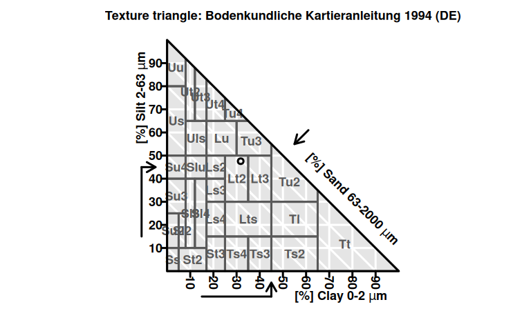

Particle size estimation
Based on the hydrometer method by ASTM D422-63 (2007) and Bouyoucos (1927)
Zacharias Steinmetz
2023-09-20
Source:vignettes/texture.Rmd
texture.RmdMaterials
Method
Dispersing solution
Dissolve 40 g of SHMP in 1 L of deionized water. To facilitate complete dissolution, fill a 1 L volumetric flask with about 500 mL of deionized water and add the SHMP step-by-step while stirring the solution with a magnetic stirrer. The solution is stable for at least one month.
Calibration
Hydrometers are graduated to be read at the bottom of the meniscus. However, readings may need be taken at the top of the meniscus in opaque soil suspensions.
Lower the hydrometer into a 1 L cylinder filled with 125 mL of SHMP solution and 875 mL of deionized water. When stabilized (after about 20 s), record both the reading at the bottom (zero or composite correction factor) and at the top of the meniscus (meniscus correction factor).
Sample pretreatment
If the soil sample contains primarily clay or silt, weigh out 50 g of soil (accuracy ± 0.01 g) in a 500 mL screw bottle (in 3-fold replication). If the sample is sandy, take 100 g each. Add 125 mL SHMP solution to the soil. Agitate the mixture for 16 h (or overnight) in a horizontal shaker.
Completely transfer the soil slurry into the 1 L sedimentation cylinder using a squirt bottle. Fill up to the 1 L mark with deionized water. Cap the cylinder with parafilm (ensure tightness). Agitate the slurry by turning the cylinder upside down and back 30 times during 1 min.
Measurement
Place the sedimentation cylinder at a bench where it can stand undisturbed for the next 4–6 h.
Insert the hydrometer into the soil solution as soon as possible and take the first reading the latest after 40 s. Measure the temperature of the slurry. Repeat this measurement at 2, 5, 15, 30, 60, 120, 240, and 360 min. In any case, record the exact reading time. The measurements may be reduced to an initial reading after 40 s and a second one after 240 or 360 min (Ashworth et al., 2001). Remove the hydrometer after each measurement, in order not to disturb the sedimentation process, and rinse the hydrometer with deionized water.
If the ambient temperature changes, recalibrate the hydrometer. In case foam obscures the hydrometer reading, use another point on the hydrometer scale as reference and mark its position with a permanent marker on the outside of the glass cylinder. The exact readings may be recorded at the end of the measurement by reinserting the hydrometer at the previous position.
Data recording
The following table may serve as a sample template to record the data
| Sample data | Time [min] | Hydrometer reading | Correction | Temperature [°C] |
|---|---|---|---|---|
| S1 | 0.66 | 39 | 2 | 23 |
| S1 | 2.00 | 33 | 2 | 23 |
| S1 | 5.00 | 29 | 2 | 23 |
| S1 | 15.00 | 23 | 2 | 23 |
| S1 | 30.00 | 22 | 2 | 23 |
| S1 | 60.00 | 20 | 2 | 23 |
| S1 | … | … | … | … |
| S2 | … | … | … | … |
Data evaluation
A complete description of how to calculate the particle size
distribution from the recorded hydrometer readings is available in the
respective ASTM guideline (ASTM D422-63, 2007). The algorithm has also
been implemented into this package using the texture()
function.
After loading envalysis, the texture()
function is applied to the clayloam sample data set coming
with this package.
# > time temperature reading blank
# > 1 0.66 23 39 2
# > 2 2.00 23 33 2
# > 3 5.00 23 29 2
# > 4 15.00 23 23 2
# > 5 30.00 23 22 2
# > 6 60.00 23 20 2
# > 7 180.00 23 18 2# > Soil particle estimation according to ASTM D422-63
# > Hydrometer model: 152H
# > Specific gravity (Gs) = 2.65 Soil extract: 50 g/L
# >
# > Particle size distribution:
# > Particle size Percent passing
# > 0.05155 0.754
# > 0.03102 0.634
# > 0.02019 0.554
# > 0.01214 0.434
# > 0.00864 0.414
# > 0.00618 0.374
# > 0.00361 0.334
# >
# > Fitted with Log-logistic (log(ED50) as parameter) with upper limit at 1 (LL2.3u)
# >
# > Soil texture classes (DIN 4022):
# > Clay Silt Sand
# > Estimate 0.3177 0.4755 0.2068
# > Std. Error 0.0131 0.0242 0.0112
# >
# > Soil texture classes (USDA):
# > Clay Silt Sand
# > Estimate 0.3177 0.4287 0.25366
# > Std. Error 0.0131 0.0226 0.00954
plot(tex)
Further soil classification and plotting may be performed using the soiltexture package.
For that, the soil texture data needs to be converted into a special
data.frame.
germansoil <- as_tridata(tex, which = "din")
ussoil <- as_tridata(tex, which = "usda")Now, texture classes are determined, for example, in accordance with the German “Bodenartendiagramm” (DE.BK94.TT) or USDA (USDA.TT).
TT.points.in.classes(germansoil, class.sys = "DE.BK94.TT")# > Ss Su2 Sl2 Sl3 St2 Su3 Su4 Slu Sl4 St3 Ls2 Ls3 Ls4 Lt2 Lts Ts4 Ts3 Uu Us
# > [1,] 0 0 0 0 0 0 0 0 0 0 0 0 0 1 0 0 0 0 0
# > Ut2 Ut3 Uls Ut4 Lu Lt3 Tu3 Tu4 Ts2 Tl Tu2 Tt
# > [1,] 0 0 0 0 0 0 0 0 0 0 0 0
TT.points.in.classes(ussoil, class.sys = "USDA.TT")# > Cl SiCl SaCl ClLo SiClLo SaClLo Lo SiLo SaLo Si LoSa Sa
# > [1,] 0 0 0 1 0 0 0 0 0 0 0 0The analyzed soil is a clay loam (German: “Toniger Lehm”, Lt2), which may be plotted as follows.
TT.plot(class.sys = "DE.BK94.TT", tri.data = germansoil)
For further details, see the soiltexture package vignette on CRAN.
References
Ashworth, J., Keyes, D., Kirk, R., & Lessard, R. (2001). Standard Procedure in the Hydrometer Method for Particle Size Analysis. Communications in Soil Science and Plant Analysis 32, 633-642. DOI: 10.1081/CSS-100103897.
ASTM D422-63 (2007). Standard Test Method for Particle-Size Analysis of Soils. Technical standard. ASTM International, West Conshohocken, PA.
Bouyoucos, G.J. (1927). The hydrometer as a new method for the mechanical analysis of soils. Soil Science 23, 343–354.
Moeys, J., Shangguan, W., Petzold, R., Minasny, B., Rosca, B., Jelinski, N., Zelazny, W., Souza, R.M.S., Safanelli, J.L., & ten Caten, A. (2018). soiltexture: Functions for Soil Texture Plot, Classification and Transformation. URL: https://CRAN.R-project.org/package=soiltexture.